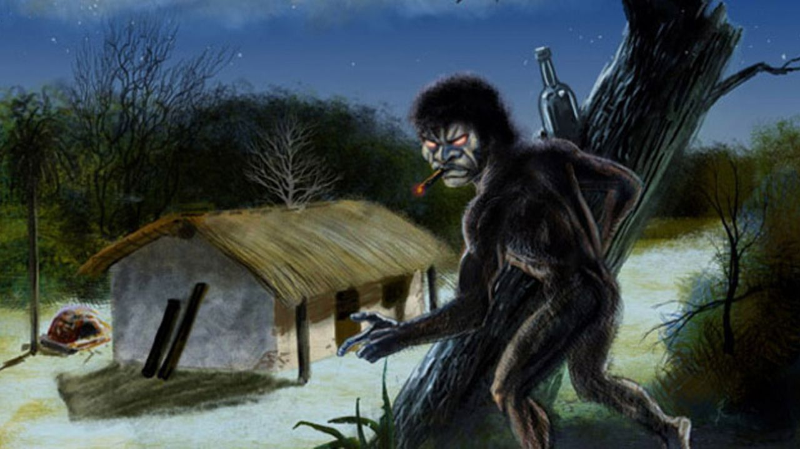
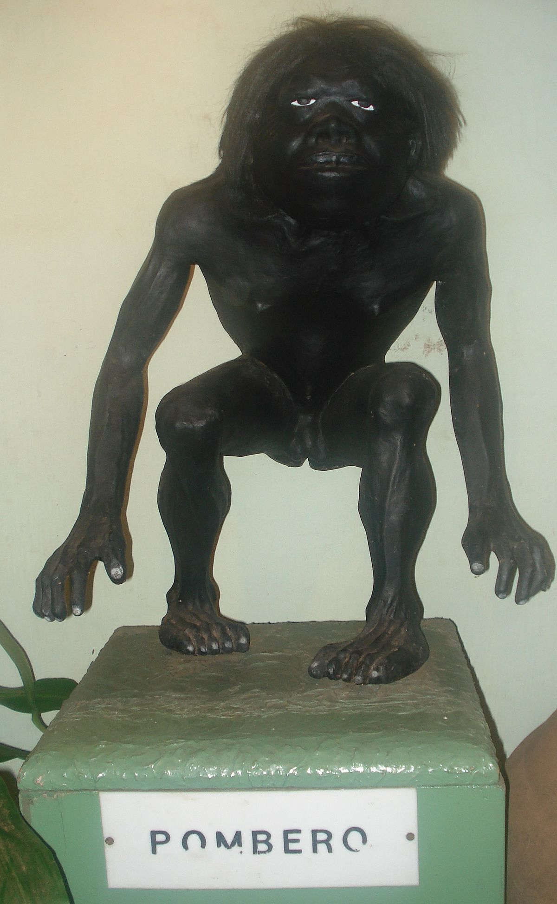

El Pombero (en guaraní, Pombéro), también conocido como «Pomberito» es una especie de duende o espíritu de la cultura guaraní que se encuentra en las zonas rurales.
Se lo conoce también con los siguientes nombres:
- Pyrague (‘Pies peludos’)
- Karai Pyhare (Señor de la Noche)
- Kuarahy Jára (Dueño del sol, tal como se lo conoce en el mito de los mbyá del sur del Brasil y de la provincia argentina de Misiones)
- Cho Pombé (‘Don Pombero’)
- Chopombé
Es difícil de explicar con certeza cuándo empezó esta leyenda, lo cierto es que resultó siendo perfecta. Ante cualquier ruido, prenda perdida o disturbio en el piso, se le echa la culpa al pombero. Algunos lo definen como un hombre más bien bajo, otros como un duende, y otros no pueden compararlo con nada que hayan visto alguna vez.
El pombero es popularmente conocido como una especie de duende. Podemos decir que era una especie de hombrecito chiquito, feo, fuerte y muy peludo. Tenía los brazos largos y las manos enormes. Las piernas cortas con pies invertidos para desorientar a quien lo intenta rastrear.

Su función primordial es cuidar del monte, la soja y los animales salvajes, según la mitología guaraní. La creencia estaba arraigada en Misiones, Corrientes, Entre Ríos, sur de Brasil y Paraguay, así como también llegó a Santa Fe.
Se cuenta que sus pisadas no se sienten, que anda sin ropa, pero con abundante barba que lo tapa. En algunos relatos se le da un cuerpo fit, robusto, moreno y brazos largos. En otras se lo plantea como un genio protector de las aves de la selva. También se le dio superpoderes: puede transformarse en cualquier animal, imitar el canto de cualquier ave, e incluso hacerse invisible o deslizarse dentro de cualquier ranura.
Fue tanta la popularidad del pombero, que cada pueblo de la región del Litoral aclamaba su propiedad intelectual. Pedían que sea patrimonio exclusivo de su zona, y hasta le ponían apodos distintivos para marcar territorio. Así, el mismo duende se lo llamó como Pyragué (pies peludos), Karaí Pyhare (Señor de la noche) y Kuarahy Jará (Dueño del sol).
“Vimos un bicho largo, feo, con las uñas del pie largo, tenía short color azul y remera marrón. Su boca era color lila, su cuello blanco, sus ojos azules, sus pestañas eran largas y no tenía cejas, su cabello era negro y sus orejas parecían de gatos” , había detallado una niña de ocho años llorando, tras ver su presencia.
¿Qué hace el pombero?
Como si fuera un detective, su leyenda servía para resolver cualquier misterio. Si los animales actuaban raro, era porque lo vieron, y este fue tan silencioso y vivaz, que escapó antes de ser descubierto. Si faltaba la ropa tendida, fue porque el pomberito hizo travesuras, para luego convertirse en tronco en la noche.
También puede ser el flautista de Hamelín, hipnotizando a quienes lo vieron, pero quedaron en trance al escuchar su silbido, mientras él vuelve a su lugar seguro. Se dice que tiene una kryptonita, y es el cuerpo de una bella mujer, así como un objeto brillante, que lo impulsa a robar.
Al igual que las personas, el pombero puede ser aliado o villano. Si es tu enemigo, estarás siempre en peligro cuando visites el bosque, porque siempre con sus engaños intentará perderte ahí dentro. Provocará extraños accidentes dentro de los ranchos, como que caigan misteriosamente los utensilios de cocina. Ni hablar si encima sufrís insomnio, porque escucharás sus pasos todas las noches, junto a voces imperceptibles para otros.
¿Cómo se transforma en el enemigo? Según diversas historias, decir su nombre en voz alta es declararle la guerra, al igual que hablar mal de él, o simplemente silbando en horas de la noche. Otras leyendas dicen que el Pombero puede hechizar a las personas con un simple rose con sus manos peludas, produciendo que la persona se torne tonta, muda o experimente temblores.

Hasta acá hablamos del mito, lo que relatan en los cuentos. Pero sucedieron cosas raras en ese lugar y la gente que vive en la zona, le echa la culpa al Pombero. A veces liberan vacas y otros animales de sus corrales o dispersan gallinas u otros grupos de animales domésticos. Muchos nunca encontraron explicación.
Otros se quejaron de que les falta tabaco o huevos de gallina , además de encontrar maíz desparramado. Pero esto no es todo, porque no hay que irse muy lejos en el tiempo, en el 2016, en San Felipe, distrito Santiago Misiones, Paraguay, un adolescente de 16 años desapareció durante un día entero.
Lo encontraron con arañazos y atado a seis metros de altura en un eucaliptal. Lo raro es que para bajarlo, tuvieron que ayudar 10 hombres… por lo que las dudas fueron: ¿cómo hicieron para subirlo? Otra cosa es que no le robaron nada, lo encontraron con su celular, su bicicleta y plata pero para sorpresa de la gente del lugar, el chico no se acuerda absolutamente nada.
Los medios locales entrevistaron a la familia del chico y ellos contaron que no era la primera vez que al joven le ocurre algo similar. El año anterior, en circunstancias igual de extrañas, resultó con varios golpes luego de estar encerrado en el baño de su vivienda.
Como este, habían varios casos similares, de personas, sobre todo chicos, que aparecían lastimados y no se acordaban absolutamente de nada. La gente del lugar, le echa la culpa al siempre temido Pombero.
Cómo hacerse amigo del pombero
Para los más interesados, ser amigo del duende puede dar grandes ventajas. Gracias a su invisibilidad, él puede guiar a los cazadores a las presas más grandes, para conseguir una buena pesca o caza; así como hace crecer los cultivos en abundancia. Como extra, cuidará de los animales de corral, guiará a los perdidos, y ayudará a quienes buscan frutos en el bosque.
Para ganarse su amistad, primero es necesario dejarle cada noche, durante treinta días sin interrupción, potes de miel o tabaco. En suma, deben colocarse detrás del rancho de cada hogar, invitándolo a que las retire, sin molestarlo en el camino.
¡Pero ojo!, si te agarra confianza, podría tomarte el codo. Como todo amigo, no disfruta que hablen mal de él, que mencionen su nombre en voz alta, o se le haga burla de su grito o silbido. Tan sólo estas acciones serían el fin de su amistad, y el comienzo de su furia y maldades en el hogar.
Todos quieren un pombero
Que su leyenda se haya esparcido por todo el noreste argentino, la región del Litoral, y nuestros países hermanos; no es casualidad. Se dice que el mito se esparció por la propia necesidad de tener una historia que contar, y sin miedo al plagio, todos la fueron tomando.
También apareció como una excusa, como una forma de asustar a los hijos traviesos, aunque se extendió para justificar una infidelidad, diciendo que el hijo nacido por adulterio, fue fruto del propio duende. Así, cuando era el momento del parto, y no había similitud entre el padre y su hijo, se echaba la culpa al pombero, diciendo que había hecho de las suyas.
Quizás la necesidad de hacerlo propio fue el motor para buscarle otro nombre, y darle un folklore más similar al del pueblo. Padres, abuelos y bisabuelos dan fe de esta leyenda, y varios juran haberlo visto y ser víctimas de sus travesuras. ¿Hay uno sólo? ¿Tiene una familia expandida?